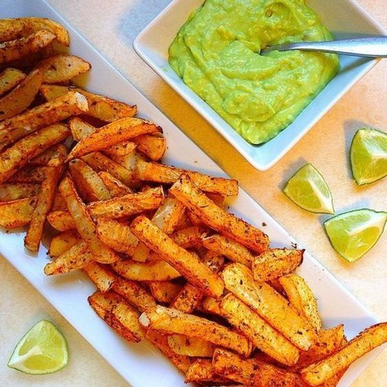

Receta de las mejores patatas fritas del mundo mundial

Ingredientes
- Patatas (3 pza)
- Aceite de girasol (1 l)
- Sal al gusto
Procedimiento
- Primero pela las patatas y córtalas en rodajas de 1
cm de grosor aproximadamente. Corta cada
rodaja en varitas de 1 cm de ancho y unos 5
de largo y continuamos con todas las rodajas
hasta que ya tenemos las patatas listas para
la siguiente fase.
- Una vez picadas las patatas, recomendamos dejarlas en remojo en un plato hondo. Así evitamos que se pongan marrones como consecuencia de la oxidación, y además, eliminamos parte del almidón que tienen las patatas, evitando así que al freírse se peguen unas a otras.
El dejar en remojo las patatas fritas antes de freírlas es opcional pero a mí sí me parece adecuado, limitando el remojo a unos 15 minutos, que son suficientes para eliminar la mayoría del almidón y que aprovechamos para preparar las sartenes, el aceite, etc.
- Luego hay que espolvorear ligeramente las patatas tras su remojo con un poco de sal fina. Tras mezclar bien removiendo las patatas con las manos, procedemos a freírlas con la técnica que indicaremos a continuación.
Una vez fritas, probamos una patata y espolvoreamos más o menos cantidad de sal sobre las patatas en función de cómo nos hayan quedado. Normalmente será suficiente con añadir un pellizco sobre las patatas terminadas.
- Para freír bien las patatas hacen falta dos sartenes, una para la primera parte del proceso en la que freiremos las varitas de patata a 140º durante unos 7 u 8 minutos, y otra para la segunda fase, en la que doraremos y dejaremos crujientes las patatas friéndolas a 190º durante unos cinco minutos más.
Si queréis hacer esto en freidora eléctrica, podéis freír las patatas a fuego lento, sacar la cestilla de la freidora dejando que escurran el aceite y mientras poniendo el termostato al máximo, volviendo a sumergir las patatas en cuanto el aceite alcance la temperatura de 190º para conseguir dorar bien las patatas.
- Hay quien recomienda una fase intermedia entre las dos frituras, en la que se meten las patatas prefritas en el congelador durante unos 30 minutos para después terminarlas en la fritura a alta temperatura. (Se puede hacer pero en mi opinión, la diferencia no se nota tanto, siendo suficiente un reposo de unos 10 minutos entre una fritura y otra para conseguir unas patatas fritas impresionantes).
El choque de temperatura, al meter las patatas en la segunda sartén, hace que las patatas además de crujientes queden algo cuarteadas en su exterior, lo que incrementa la sensación de crujiente. Por dentro, siguen estando blanditas, como confitadas, gracias a su paso por la primera sartén.
- Las patatas fritas guardan muy bien el calor. Por eso no hay problema en dejarlas reposar sobre papel absorbente de cocina para retirar el exceso de aceite que puedan haber retenido. De todas formas, con esta técnica, en la fritura final a alta temperatura o "deep fry", las patatas absorben menos aceite que si se hace progresivamente subiendo el fuego.
Puedes encontrar más información aquí